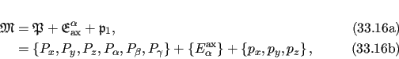

Next: Free rotor equations Up: Free rotor frame order Previous: Free rotor frame order Contents Index
The full parameter set for the free-rotor model implementation is
|  |
where Pi are the average domain position translations and rotations, Eαax is the single angle defining the rotation axis, and pi are the coordinates of the pivot point.